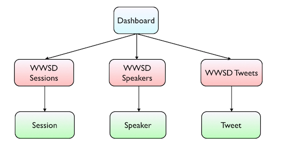
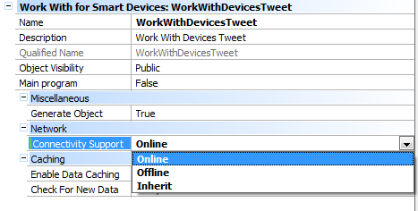
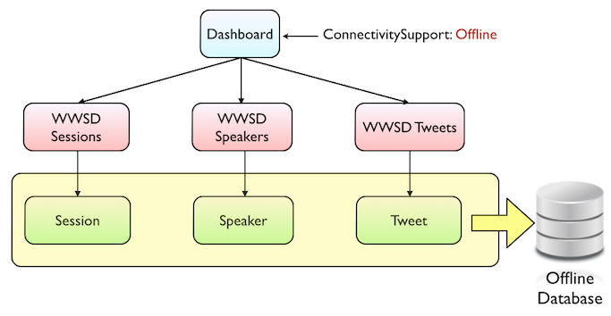
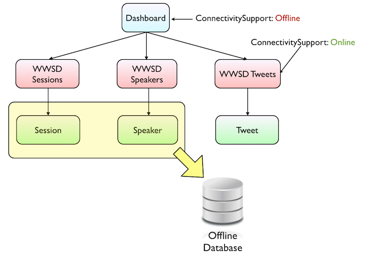

As explained in the Connectivity Support property's documentation, this property has 3 possible values: Online, Offline and Inherit. By changing this property's value in a per-object basis, it is possible to decide whether some sections of the application are going to work with the local database (Offline) or by calling REST services to get the panel's data (Online). How it worksAs an example, we will be using a simple Event application, were we have information about Session and Speakers, but also we'll display a list of Tweets related to the Event. So in our simple Event application we have the following 3 transaction objects with their corresponding Work With for Smart Devices objects:  Now that we have designed the app, we want to make this application an Offline application. To do that all we have to do is set the Connectivity Support property of the main Dashboard object to "Offline". Note: Remember that for all non-Main objects the Connectivity Support property is set to Inherit by default.  After building the Dashboard object, the Offline Database object is created with the Speakers, Session and Tweets tables, as explained in the Offline Database object documentation, because those are the tables that are accessed by the offline objects.  After this, the Event application will have all the tables stored locally and all the database access will be performed on the local database. But what if it we don't want to store the Tweets locally, and instead we want that WWSD to work Online? This is for a very simple reason: Tweets will vary much more often than the rest of the application's information, and we want to have them available as soon as they are published. We don't want to wait for a synchronization to get the latest tweets, nor do we want to synchronize more often just to get the tweets. Having this configuration is as simple as setting the Connectivity Support property of the Tweets' Work With for Smart Device object to "Online". Then the tables that are going to be in the OfflineDatabase are only "Speakers" and "Sessions" as shown in the image bellow:  Using the Connectivity Support property over Procedures or Data ProvidersAs explained in the Connectivity Support property documentation, this property is also available for Procedures and Data Providers. This makes much easier for the developer to call Online Procedures or Data Providers from Offline objects. An intricate way of calling an online Procedure, which is exposed as a REST service, from an offline panel is by using the HttpClient data type. On the other hand, a much simplier way of doing the same is to set the Connectivity Support property of the Procedure into "Online". This forces the offline application to always call this procedure via REST services. The device executes the same process as if the HttpClient data type is used instead, however this property gives a cleaner and simplier solution. Following the scenario mentioned in this document, suppose you want to call a Procedure, which is exposed as a REST service, and which also returns all new Tweets that mention your event. About Connectivity Support's "Inherit" valueInherit value adds flexibility to your solution since It makes possible that an object "A" works either Online or Offline, depending on the Connectivity Support property of the caller object. For instance, if there are three smart devices objects: objectA, objectB, and objectC that have the following properties configuration:
If B calls A, then A will work as an Online object ( Works with data of the web server ) Note: This applies only to the case that the connectivity Support of the Main object is Offline. If that is online, the whole architecture changes and, in the sample above, B cannot call C. So you cannot call an offline object in an online application. See also
|